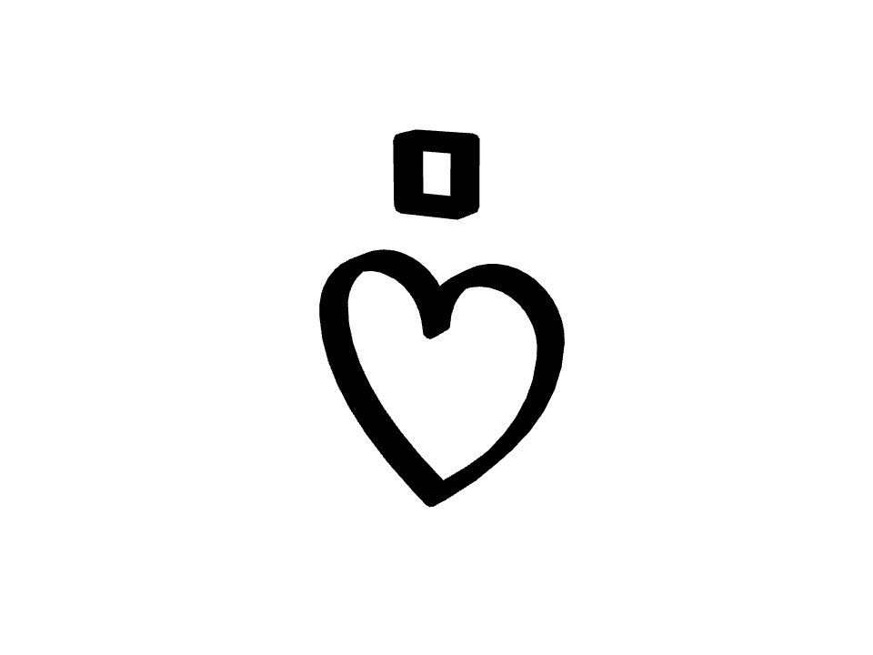
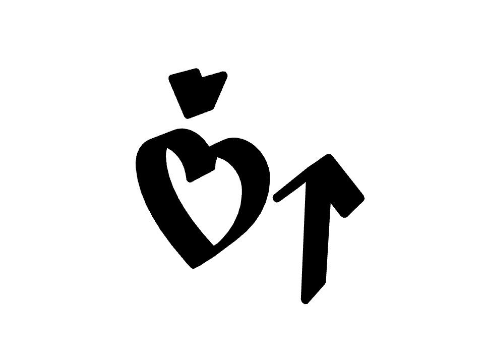
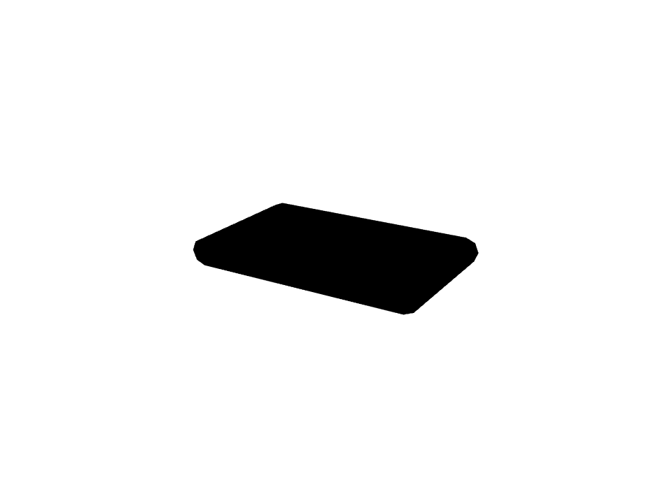

After Rain









3D equivalents of each word, extruded from its original Blissymbol drawing. Click a picture for its .glb model. Interactive 3D viewer · Original and 3D side by side



3D equivalents of each word, extruded from its original Blissymbol drawing. Click a picture for its .glb model. Interactive 3D viewer · Original and 3D side by side